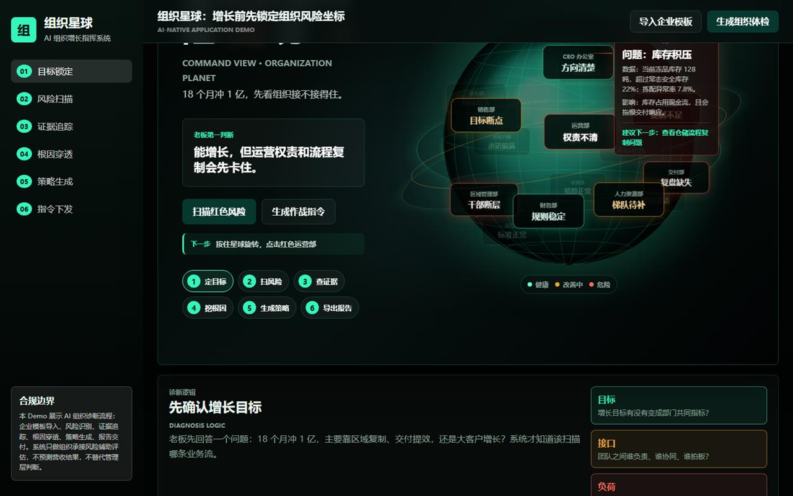
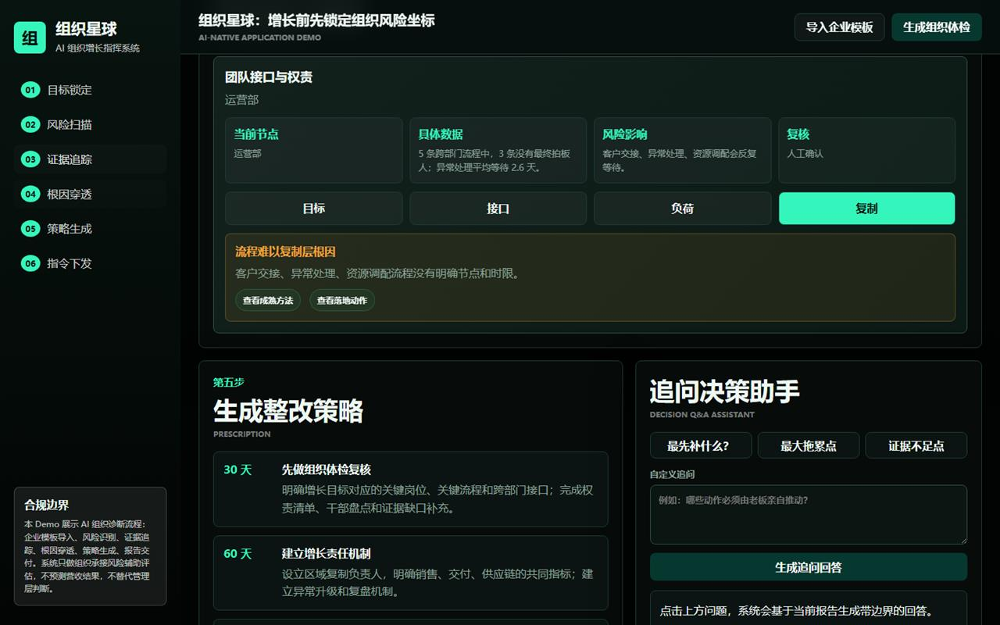

组织星球 老板驾驶舱
增长之前，先看组织接不接得住。
面向 CEO / 老板 / HRD / 业务负责人的组织诊断与增长作战系统：输入增长目标与组织信息，系统用五维模型计算组织承接风险，以 3D 组织星球和红黄绿部门节点呈现风险坐标，并完成「证据追踪 → 根因穿透 → 30/60/90 天整改处方」的完整闭环。
项目定位
目标定了，但组织接不接得住？组织星球把这个问题变成一张可读、可查、可交办的作战地图。
核心能力
区别于传统经验型组织诊断，系统强调可解释、可复核、可交办。
五维风险模型
围绕增长目标，从干部能力、架构适配、战略传导、权责清晰、流程成熟五个维度量化组织承接风险，输出增长承接风险总分。
3D 组织星球
把组织架构映射为可旋转的 3D 星球，部门健康状态以红黄绿节点呈现，点击风险部门即可下钻到证据与根因。
证据可复核
每条 AI 判断同步呈现证据、置信度、未知项与人工复核点，避免模型在证据不足时过度判断，结果可追溯、可复核。
可交办整改
沿目标、接口、负荷、复制四层穿透根因，生成 30/60/90 天整改处方与作战指令，直接落到部门与负责人。
六步产品流程
从老板的一个增长目标开始，到部门拿到明确动作结束。
目标锁定
老板确认增长目标与策略（区域复制 / 交付提效 / 大客户增长），系统定位应扫描的业务流。
风险扫描
五维模型计算承接风险总分，3D 组织星球红黄绿标注部门健康状态。
证据追踪
每条判断展示证据、置信度、未知项与人工复核点，风险结论可追溯。
根因穿透
从目标、接口、负荷、复制四层拆解组织问题，定位真正卡点。
策略生成
输出 30/60/90 天整改处方，并支持老板追问决策助手。
指令下发
生成可交办的作战指令与专业报告，责任到部门、动作到人。
界面展示
三张截图对应「看见 → 定位 → 行动」三段核心体验。
老板驾驶舱总览
“18 个月冲 1 亿，先看组织接不接得住。”首页一屏给出老板第一判断，3D 组织星球上的部门节点直接标注“目标断点 / 权责不清 / 干部断层 / 复盘缺失”等风险标签。

风险扫描与证据弹窗
点击风险部门立即弹出问题、数据证据、影响与下一步建议，例如“库存积压：冻品库存 128 吨，超过安全库存 22%”，风险结论不再是感觉，而是数据。

根因穿透与整改策略
从目标、接口、负荷、复制四层拆解根因，输出 30/60/90 天整改处方，配套“追问决策助手”让老板就着报告继续提问，直达可交办动作。
现在就把组织问题变成行动指令
打开在线 Demo：导入企业模板 → 生成组织体检 → 旋转星球 → 查看证据 → 追问决策助手。